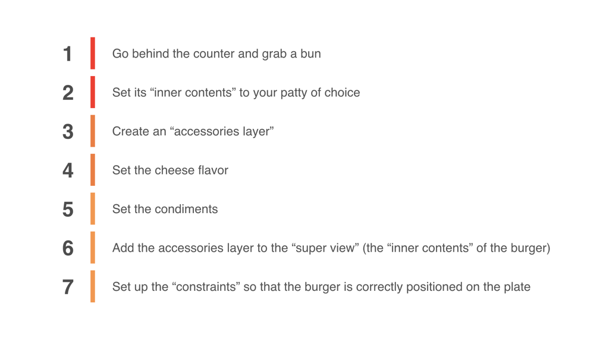
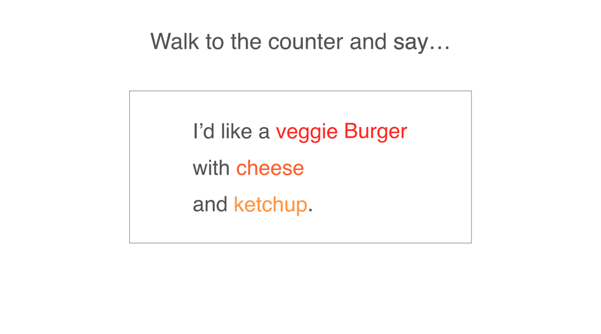

Learning about iOS development?
I am the author of iOS 14 Getting Started and six other courses on Pluralsight.
Deepen your understanding by watching!
I am the author of iOS 14 Getting Started and six other courses on Pluralsight.
Deepen your understanding by watching!
SwiftUI is Declarative. What Does That Mean?
“Declarative” is one of Swift UI’s four core principles.
Aside from taking for granted that declarative is just “better” than whatever else, how about a visual to understand the declarative way of thinking?
Imagine yourself in a restaurant (sit-down or fast food, whichever).
When you want a burger, which best describes what you do?

or…

Saying what you want (aka, being “declarative”) is what the most probable thing you’d do in a restaurant.
That’s exactly the recipe you use when you’re working with SwiftUI.